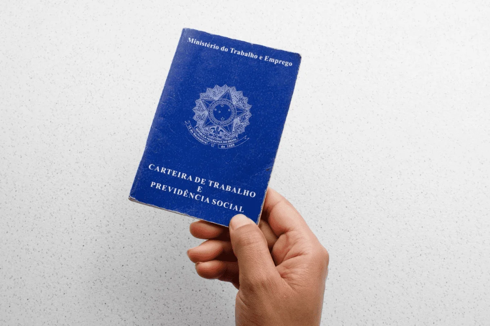
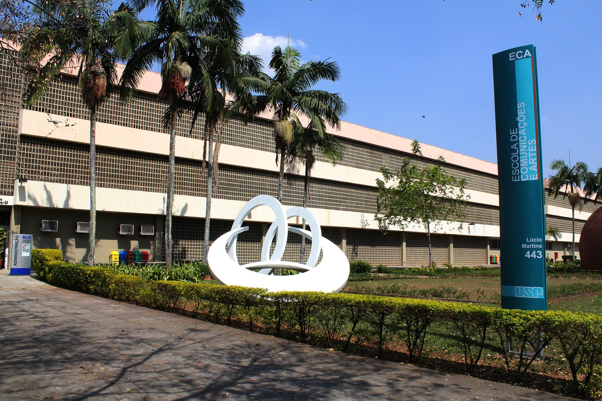

Você vai terminar o ensino médio em 5 meses e está indeciso sobre o que fazer no próximo ano
Você é aceito em uma instituição de ensino superior,porém,ela está localizada em uma cidade longe da qual você mora

Você está em busca do primeiro emprego e precisa analisar algumas propostas oferecidas e com isso apresenta indecisão

Você está se sentindo satisfeito e realizado por continuar em uma faculdade
Você se sente satisfeito por encontrar uma faculdade perto de onde mora e não ter que se acomodar em uma cidade diferente
Você está satisfeito por trabalhar menos,porém desanimado por receber pouco
Você está satisfeito por receber mais dinheiro,porém,desanimado por ter que trabalhar demais